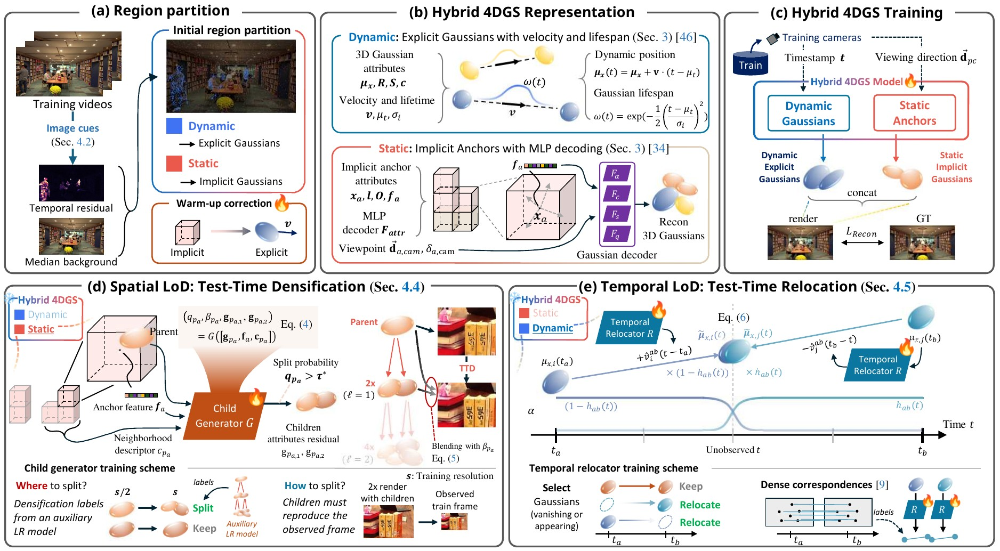
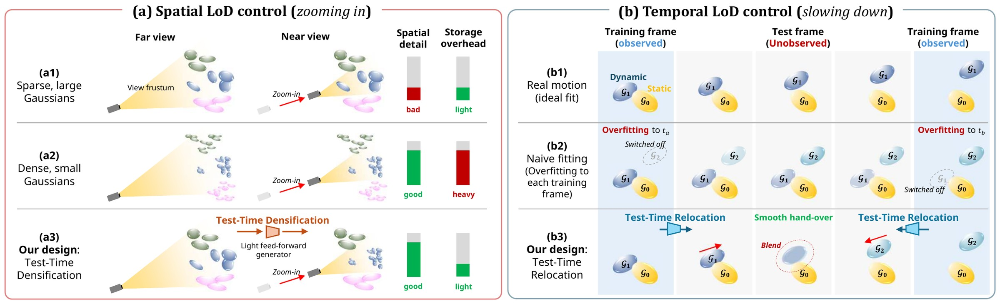
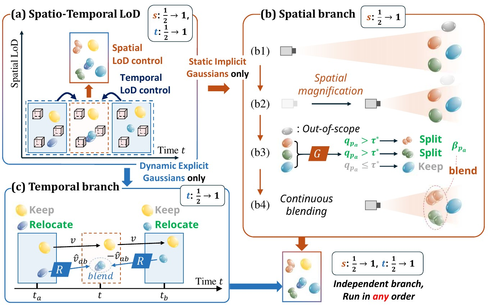

Spatio-Temporal LoD Framework for 4DGS
One compact hybrid 4DGS renders the full sequence at its base level. Test-Time Densification generates finer detail at the requested view and time with little additional storage.
* Equal contribution † Corresponding author
TL;DR STLoD-GS splits static Gaussians for spatial zoom and relocates dynamic Gaussians for slow motion, generating detail on demand from one compact 4D scene model.
4D Gaussian Splatting renders dynamic scenes in real time, but the level of detail of its renderings is fixed to the spatio-temporal resolution of the training videos. Users, however, zoom into regions of interest and slow playback down, which asks for views at resolutions that were never observed in training.
STLoD-GS stores only a compact hybrid 4DGS of implicit anchors for static regions and explicit Gaussians for dynamic regions. When a view is magnified, test-time densification (TTD) splits the magnified static Gaussians into finer children and relocates dynamic Gaussians to unobserved times. Both are computed on demand and never stored.
4D Gaussian Splatting (4DGS) synthesizes novel views of dynamic scenes in real time, but the Level-of-Detail (LoD) of its renderings is fixed to the spatio-temporal resolution of the training videos. In practice, however, users demand more than novel view synthesis, such as zooming into regions of interest or slowing playback down, which requires rendering views at spatio-temporal resolutions beyond those observed in training, without compromising the compact storage and real-time interactivity of 4DGS. Existing LoD-controllable GS methods address only the spatial axis of static scenes. They either filter detail away for distant views or store several pre-built levels, which increases storage and causes visible discontinuities between levels. To overcome these limitations, we propose STLoD-GS, a spatio-temporal LoD framework for 4DGS based on Test-Time Densification (TTD), which generates finer detail at test time instead of storing it. STLoD-GS builds on a hybrid 4DGS of implicit anchors and explicit Gaussians, which serve as its spatially and temporally extensible parts, respectively. Whenever a view is spatio-temporally magnified, a compact generator splits implicit Gaussians into finer children for spatial LoD, and a lightweight network predicts the position and velocity of each explicit Gaussian at unobserved times for temporal LoD. This Gaussian-wise TTD enables continuous spatio-temporal resolution control without heavy pre-cached detail or separately stored levels, and it also extrapolates robustly beyond the observed resolution. Experiments on five dynamic scene datasets show that STLoD-GS not only outperforms SOTA 4DGS methods but also provides spatio-temporal LoD when zooming in space and time with almost no extra storage.
One compact hybrid 4DGS renders the full sequence at its base level. Test-Time Densification generates finer detail at the requested view and time with little additional storage.
In magnified regions, a lightweight child generator splits selected static Gaussians into finer children. Parent and child opacities blend continuously across levels.
At unobserved times, the temporal relocator moves vanishing Gaussians forward and appearing Gaussians backward from adjacent training frames, reducing ghosting between observations.
Each video compares STLoD-GS with the baselines side by side. Pick a thumbnail to play it in the viewer below.
Select a panel in the figure or its card to explore the steps.
A hybrid base of explicit dynamic Gaussians and implicit static anchors is trained once. On the frozen base, the child generator G and the temporal relocator R add spatial and temporal detail at test time.

Sparse Gaussians are light but lose detail up close, and per-frame fitting leaves ghosting between frames. Generating children and relocating Gaussians at test time addresses both without extra storage.

The spatial and temporal branches act on disjoint sets of Gaussians, static implicit and dynamic explicit, so the two magnifications are controlled independently and can run in any order. A magnification of 1 on both axes reproduces the frozen base model exactly.

Move the camera closer to see a static Gaussian split, or slow playback to follow a moving Gaussian between training frames.
Main paper · Fig. 4(b) · Algorithm 1 (static branch)
Main paper · Fig. 4(c) · Algorithm 1 (dynamic branch)
Each scene is evaluated from a held-out camera. The arrows show the change from training to test resolution (s) and frame rate (t). Red marks the best score and blue the next distinct score.
Main paper · Table 1 · At 4× spatial magnification and 2× frame rate (s: 1/4 → 1, t: 1/2 → 1), the evaluation includes every frame of the held-out view.
Quality scores are averaged over the selected scenes. Storage is the mean model size over all 24 scenes. Groups (a), (b) and (c) denote implicit, explicit and hybrid 4DGS, respectively. Supplementary Table 9 also reports quality at 1× and 4× zoom.
Across 24 scenes, STLoD-GS achieves the highest PSNR and the lowest LPIPS and tLP. Its SSIM of 0.801 ties the base model for first. Compared with FreeTimeGS, STLoD-GS improves all four quality metrics, gaining 0.49 dB in PSNR with 11.7% less storage (53.7 vs. 60.8 MB). Even without TTD, the base model surpasses every external baseline on all four averages. Adding TTD lowers LPIPS on each of the five datasets, from 0.281 to 0.268 overall.
Main paper · Table 2 · SelfCap, four scenes and ten frames. All training frames are observed, and the test view is rendered at 4× zoom (s: 1/4 → 1, t: 1 → 1).
(a) Store-and-Select, (b) Render-then-Enhance, and (c) Test-Time Densification. † Trained separately for each frame.
At 4× zoom on SelfCap, STLoD-GS achieves the highest PSNR (22.33 dB) and the lowest temporal errors (5.18 tOF and 0.0442 tLP). It also has the smallest model at 67.8 MB. CLoD-GS achieves the lowest LPIPS (0.251) and uses 1,793.5 MB.
Main paper · Table 3 · NVIDIA, eight scenes. Models observe every other training frame and are evaluated at the intervening times in the held-out view (s: 1 → 1, t: 1/2 → 1).
(a) implicit, (b) explicit, and (c) hybrid 4DGS.
On unobserved NVIDIA frames, test-time relocation raises PSNR from 27.93 to 28.28 dB and reduces tOF by 25% (0.176 to 0.132) relative to the base model. STLoD-GS leads on PSNR, SSIM, LPIPS and tOF. FreeTimeGS and the base model share the lowest tLP (0.0035), followed by STLoD-GS (0.0038).
Main paper · Table 5 · Models are trained at the captured resolution and frame rate on six scenes. The test view is rendered at 2× and 4× spatial magnification at the original frame rate.
MUSIQ (higher is better) and NIQE (lower is better) measure image quality without a high-resolution reference. Scores are averaged over six scenes.
At both 2× and 4× zoom, STLoD-GS achieves the highest MUSIQ and the lowest NIQE. Relative to the base model, TTD raises MUSIQ by 1.70 points at 2× and 2.15 points at 4×.
@article{kwak2026stlodgs,
title = {STLoD-GS: Spatio-Temporal Level-of-Detail 4D Gaussian Splatting via On-Demand Test-Time Densification},
author = {Kwak, Sangwoon and Kwon, Weeyoung and Jeong, Jun Young and Cheong, Won-Sik and Choo, Hyon-Gon and Oh, Jihyong},
journal = {arXiv preprint arXiv:xxxx.xxxxx},
year = {2026}
}